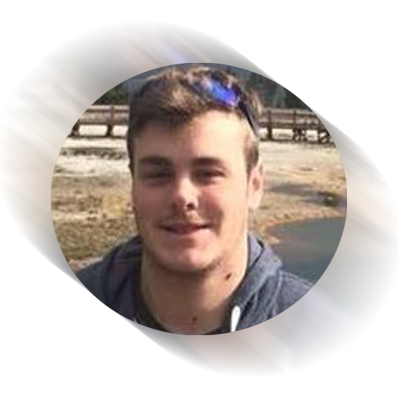
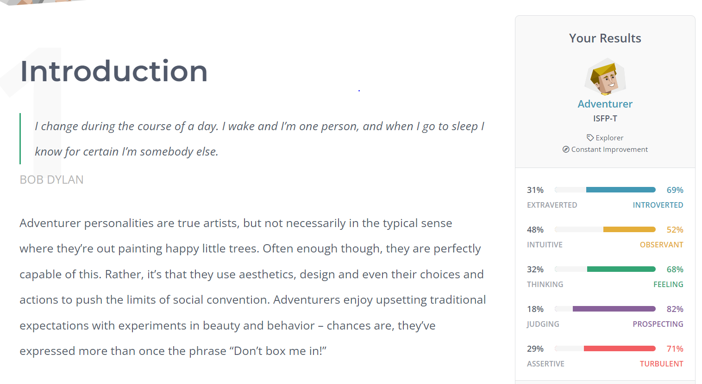

Sean Heighway
Student ID: s3925054

My name is Sean Heighway, I’m 27 years old and since graduating high school in 2012 I’ve been working full time in the hospitality and management sectors. I’ve always had a keen interest in all things technology whether it be video games or even just the components used to build and run a computer.
I come from an all Australian only english speaking family, we are a small but close family who love getting together and celebrating all family milestones and special events throughout the year. As far as my education goes I completed my high school certificate in 2012 and since then have completed a couple of units in a bachelor of nutrition before changing to this IT course to follow my true interests. I love all things cricket and have been playing with the same group of friends for the last 10 years in our local competition and just can’t get enough of it whether it be watching the games on tv or playing every saturday in summer.
My interest in IT came from a very young age from when I was about 6 years old I remember playing on a very old computer with my dad playing the first Warcraft game that was released and ever since then I’ve had an enormous interest in video games, how they work and how I can get involved in the creating of games. I would say my primary interest in IT is in the gaming sector of it however since learning about python and how to work and code in python I can say that I find it very interesting and satisfying to write a code and see it come to life!
I chose RMIT because one of my friends recommended them to me and after doing some research I see that it has an awesome reputation and can provide me with everything I need to succeed in a career in IT.
I expect to learn a lot about IT in particular coding and programming using different languages and how to use that to develop projects such as maybe games and fix real world problems.
Personality Profile

My results for the myers briggs test gave me the ISFP result, saying that I’m introverted, observant, feeling and prospecting. The strength of the "adventurer” personality type are as follows; charming, sensitive to others, imaginative, passionate, curious and artistic. The weaknesses are; unpredictable, independent, easily stressed, competitive and fluctuating self esteem.
My results for the learning styles was that I’m a tactile learner; meaning that I learn by touching and doing things for myself so that I can get a grasp of what needs to be done.
I took a creativity test next and scored a 71.59 whereas the average score was 62.87 the graph was skewed more towards paradox and complexity. Paradox meaning I have the ability to both accept and work with statements that are contradictory and Complexity meaning that I have the ability to carry large quantities of information and be able to manipulate and manage the relationships between such information.
These tests mean that I’m a creative person that works well while understands the needs of others which would make me an ideal team player whilst also being competitive to help bring out both the best in myself and those in my team. When forming a team to work with I would look for other with similar personality types and natures so that we could gel together well and help each other be the best versions of ourselves as a team and deliver the best results possible. I would also look into not grouping up with people that don’t respond well to a competitive nature. I believe the results based on previous experiences at jobs and social events are very valid and can be used to help form good partnerships for group projects.